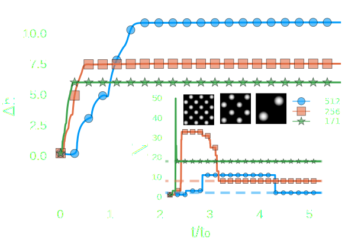
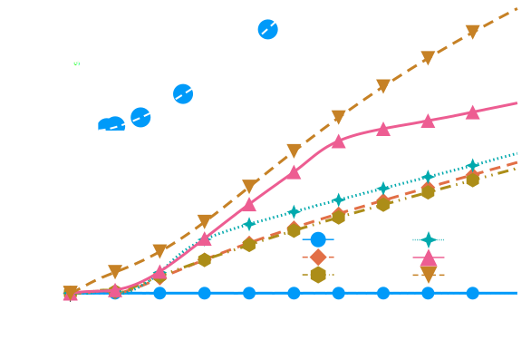

Dewetting morphologies on "modelled" switchable substrates
Dewetting
Spinodal
Nucleation
 Becker J. et al., Nat. Mater 2 2003
Becker J. et al., Nat. Mater 2 2003
Three shades of dewetting
Zitz S.,Scagliarini A. and Harting J., under review
Switchable Substrates

\[\partial_t h(\mathbf{x},t) = \nabla\cdot(M(h)\nabla p)\\ p(\mathbf{x},t) = -\gamma\Delta h - \Pi(h) \\ \theta(\mathbf{x},t) \approx \theta_0 + \delta\theta f(\mathbf{x},t)\\ f(\mathbf{x},t) = \sin(q_{\theta}(x+v_xt))\times\\\sin(q_{\theta}(y+v_yt))\]
Swalbe.jl
“Weeks of coding have saved me hours of thinking.”
\[\partial_t h + \nabla \cdot (h \mathbf{u}) = 0\\ \mathbf{u} \approx \frac{1}{\nu \alpha(h)}\left(-gh \nabla h -\frac{1}{\rho_0}h\nabla p + \mathbf{F}\right) \\ \partial_t h \approx \nabla \cdot \left(\frac{h^3}{3\mu}\nabla p\right)\]
Zitz S. et al., Phys. Rev. E, 100(3) 2019Static pattern

Scaling laws

\[ p_c \sim \gamma\kappa \\ p_i \sim \rho (h_0/t)^2 \\ h_0 \sim t^{2/3} \] \[\tau = \sqrt{\rho R_0^3/\gamma}\]
A. Eddi et al., PRL, 111(14) 2013
Marangoni flows

- Constant value
- Heaviside - step
- Smoothed step \(\tanh(x,w)\)
Marangoni flows
R. Borcia & M. Bestehorn, Langmuir, 29(14) 2013
Maragoni flows

Understanding Separation


Understanding Separation
\[\gamma/\mu \sim h_0/(2\mu)\partial_x\gamma \\ h_0 \sim \gamma/(2\partial_x\gamma)\\ \tau_s^{2/3} \sim \gamma/(2\partial_x\gamma)\\ \tau_s \sim (\partial_x\gamma)^{-3/2}\]
S. Zitz et al., arXiv, 2022
Conclusion
- Simulations of coalescence
- Surface tension gradient \(\neq\) surface tension contrast
- Separation time \(\tau_s \sim (\partial_x\gamma)^{-3/2}\)
Thank you!
Questions? üßê